Pretty Boi Drag 
Drag King 101
Our Next Workshop
MLK Library in Washington, DC
All Ages | 130pm-430pm ET
Pretty Boi Drag is a BIPOC-centered drag king performance troupe based in Washington, DC. Our mission is to create safe, inclusive spaces for anyone who wants to explore masculine performance or drag kinging.
A drag king is most often defined as a female-bodied person who performs an interpretation of masculinty in front of an audience in a variety of ways including: lip-syncing, live singing, stand-up, emceeing and sideshow.
There is no right or wrong way to be a drag king. Masculinity can be interpreted, and therefore performed, differently from king to king. We highly encourage new performers to experiment with what masculinity means to them and how they would like the audience to be affected by their performance.
These are just a few supplies that a drag king may have in their bag:
There may be many more items in a kings bag based on their persona, performance style and the depth of their illusion. Feel free to experiment with some or all of these items!